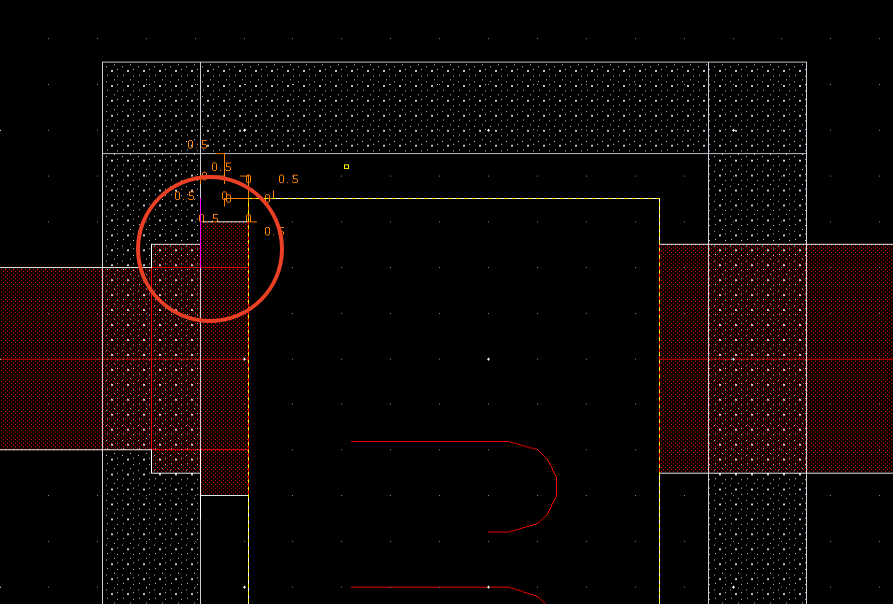
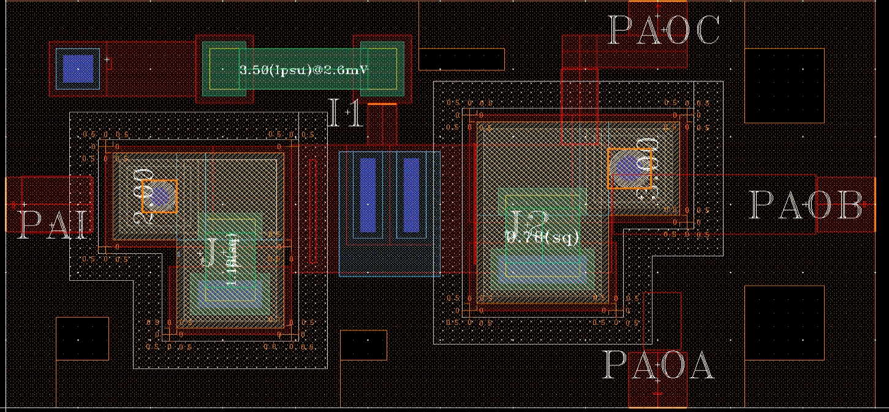

上海是个奇妙的地方——地铁准时到秒，咖啡店比书店多；人在路上走，狗在婴儿车上坐。我在这里待了一个月，既览陆家嘴之繁华，亦观风韵犹存的海派建筑。不过大部分的青春还是留在了上海微系统的二楼办公室里。
超导 CPU 的版图优化这活儿听起来像是流水线，其实是心脏外科——哪怕一个金属层位置错了半个头发丝，整个电路都可能“猝死”。
光阴似箭，一个月不过四个星期，在忙碌间仿佛一眨眼就到了离开 SIMIT 的日子。刚改完最后一张版图，窗外传来叮叮当当的装修声——那是我们住了一个月的老宿舍正在翻新。写下这些文字时，心中百感交集。
来 SIMIT 之前
收到入选研修项目的通知时，我的心情既激动又新鲜——一方面是第一次去上海，另一方面是对科研院所有着天然的敬仰。能进入这样重要的科研平台，是我进南大前从未想过的事，而匡院给了我这个机会。
报名时我把微系统所作为第一志愿，广州健康院（做小鼠脑机接口实验）作为第二志愿。面试时我介绍了自己在数字逻辑与计算机组成课上搭建的流水线 CPU，表达了对 CPU 设计的兴趣。老师们似乎心照不宣地决定让我去微系统所。后来也曾想过，如果去广州健康院或许会轻松些——毕竟超导的内容让我一度怀疑人生——但这都是后话了。况且，七月底广州还爆发了基孔肯雅热。
在进所前，我就迫不及待地联系了任洁老师，索要提前学习资料。钉钉群里，杨树澄学长甩来一大堆 PPT 和 PDF：Cadence、GPU 服务器、nomachine、mobaXterm、PSCAN2……我当时一个都不会，但兴奋感爆棚。凭着“STFW”（Search The Friendly Web）和“RTFSC”（Read The Friendly Source Code）的精神，硬着头皮学，结合 AI 帮助，终于弄明白了大概要做什么。
来 SIMIT 之后
微系统所的 WIFI 叫 ‘SIMIT’，任老师组里还有个内部网络，需要在连接 ‘SIMIT’ 的前提下，再用 Easy Connect 挂 VPN。组内的 VPN 网址可能早已更新，或者是我的 DNS 无法解析这个域名，PPT 上的网址根本无法访问。我以为自己哪个步骤出来问题，在好几张 PPT 中来回切换，磨了很长时间也没有解决。后来没办法找到学长，直接用 ip 地址访问才成功。
进入内网后，跟着学长给的 Candence 使用指南，用 Virtuoso 画 Schematic，修改 layout，结果出了很严重的报错。虽然用 Virtuoso 设计电路的人很多，网上还有个专门的论坛专门用来讨论设计中出现的问题，但是更多人画的是半导体电路。这个组里做的超导 CPU，有自己的一套工艺和设计规范，这是互联网上搜不到的，还是得问在群里。
前期研究资料就花去了一周，第二周又陷入《超导电子技术与应用》的痛苦阅读，效率极低。眼看实习期将过，我一项任务没完成。查看任务清单后，发现大部分编程类任务已被领走，剩下的版图优化成了我唯一的选择。于是接下来的一周，我修改了 36 张版图——虽不算惊天动地，但总归是课题组的实打实贡献。如果哪天新闻联播报道我国超导 CPU 重大突破，我也算那个背后默默改过版图的实习生之一，哈哈。
我的任务
有两个很重要的概念需要区分，schematic 和 layout。Schematic 是表示电路逻辑关系的电路图，就类似于初中画的电路示意图。Layout 是版图，是我们制造 CPU 是要用上的精确的图纸。
铌(Nb)是一种性能优良的超导材料。本组里面用到的 Nb03p 就是基于铌材料开发的 CPU 制造工艺规范。
过去我只是对 CPU 是“高度集成的”有一个模糊的概念，现在具体了解到这个 CPU 的每一层，让我对于“集成”有了更深刻的理解。Nb03p 主要分为如下几层：
超导和量子是两个紧密相关的概念。但是超导计算机本质上没有脱离于冯诺依曼架构，只不过是用 SFQ(Single Flux Quantun)作为 Bit 这个逻辑概念的实体化。我们还是需要有接地层（MP2）和供电偏置层（MP3）。实验和模拟中发现，超导电路在工作时 MP2 层作为接地层将汇集大量电流，这些电流产生的磁场严重影响下层电路的正常工作。所以决定将接地层改更高层的 MP3，将下方的 MP1 改为供电偏置层，并用 MP2 层作为屏蔽层，将接地层和电路功能层分隔开，以大大减小地层的电流磁场对电路的影响。Nb03p 库相当庞大，任务量繁重，最终我做了 jtl2_a、jtl3_a、s2j2o_b、s2j2o_a 这四个单元，共 36 张版图。
具体而言，对于每一张版图有四个修改点：
- 修改 JJ(Josephson Junction)的接地：外延 MP1，加 IP2 和 MP2
- 修改过孔：原本的过孔是将整个 CPU 打通的，现在因为 MP3 接地，我们不需要过孔这样深，所以要替换。
- 修改 terminal 属性：这个在 CPU 制造中没有实质的意义，只是在 eda 软件中起到标志的作用。
- 修改 MP3 接地层：将 MP3 作为 MP2 的反版。因为 MP2 本身就是一层反图，有图案的地方表示没有这一层，但是 MP3 不是反版，所以要整个器件蒙上一层 MP3 后，从 MP3 上挖掉原本 MP2 所在的位置。
看上去思路很清晰，只需要当一个工具人机械地操作，最后运行 DRC(Design Rule Check，用于检查 Layout 是否符合工艺规范)不就好了吗？但是真正上手做的时候，你就会遇到很多具体的问题：JJ 也要增加 MP2，那最后一步要不要也把新增加的 MP2 挖掉？在 JJ 附近新增加的层回合原有的其他层重合或者间距过小，应该如何处理？

甚至到后来，版图更加复杂，我面临的简直是限制资源下的规划问题。王慕恩学姐不厌其烦的回答我的提问，甚至两次来到我的工位上帮我检查问题，我掌握的知识也越来越多—-哪些器件可以修改和移动，哪些报错又是可以忽略的。有了丰富的知识库和经验储备，我也开始乐在其中，有一种玩挑战智力游戏的感觉。
譬如说这样一张版图，J1 和 J2 就是我所说的 JJ。这么一小个空间内，如果保持原有的布局，我不可能实现以上的修改，因为那样的版图在工艺上是无法实现的。
所以对我而言，我的第一步是摧毁所有和 JJ 相连接的 MN0 层（红色），移动 JJ，为 JJ 留出充足的空间（至于多大的空间可以称为充足，完全来自于经验判断）。
第二步，就是把 JJ 武装起来，给它加上所需要的层：
最后一步，是把各个端口（PAI\PAO，电流的输入输出端）和 JJ 重新用 MN0 连接起来。因为修改 term 的属性和蒙上 MP3 剪裁 MP2 不涉及布局的考虑，所以它们是很轻松的收尾工作。（如果前期布局不合理，会导致无法剪裁 MP3，因为剪裁出来的边缘也要和某些图层保持距离，不是随意乱剪的。）

然后运行 DRC，你会得到：
最有成就感的瞬间，就是 debug 结束、DRC（Design Rule Check）一次通过时。虽然 Virtuoso 卡顿频繁，但这种“从 44 个 errors 到 0”的过程，真的会上瘾。
（PS：Virtuoso 这个软件很令人疲惫，debug 过程中，经常性的会在拖动版图过程中卡死，导致我必须重启 nomachine；重启过后再一次以同样的放大倍数和选中同样的层数拖动版图，结果也必然是卡死。必须要找到更小的缩放倍数、选中更少的层去修改版图，也就是找到 virtuoso 的 sweet spot。但这样带来的代价就是精度和效率非常低，因为版图修改的精度是 0.1，且往往一个部分并不只有一个层。）
结语
从最初的憧憬，到中期的挫败，再到后期的乐在其中，这一个月让我深刻体会到——兴趣往往是在做的过程中培养出来的，而不是等到有了兴趣才去做。人生的很多时刻，大抵也都是在一次次啃下“硬骨头”中找到乐趣的。